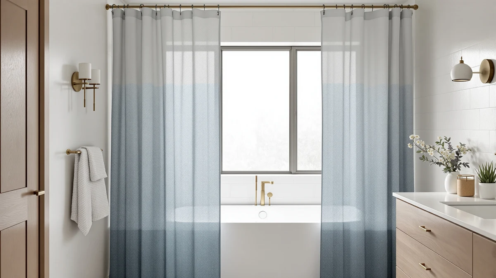

CutebriCase Ombre Modern Geometric Shower Curtain Review (2026): Worth It?
Prices and picks verified as of November 2026. Independent, reader-supported reviews.


Quick Answer
The CutebriCase Ombre Blue Modern Geometric is worth it if you want a modern gradient print with a proven 4.7-star, 2,983-review record at $21.99. If a farmhouse pattern, a no-hook install, or a different rod setup suits your bathroom better, the three alternatives below sit at the same price.
Our pick: CutebriCase Ombre Blue Modern Geometric, $21.99 Check Price on Amazon
Bottom line: our top pick is the CutebriCase Ombre Blue Modern Geometric Shower Curtain Fabric at $21.99.
Things to Know Before You Buy
- The CutebriCase Ombre Blue Modern Geometric curtain is a $21.99 polyester and PEVA panel in a 72 by 72 inch size.
- It holds a 4.7 out of 5 rating from 2,983 verified Amazon buyers, the deepest review record of the four products in this CutebriCase Ombre Modern Geometric Shower Curtain review.
- All three alternatives below are priced the same at $21.99, so the choice comes down to style and function rather than budget.
- One alternative, the TEECK rod, is hardware rather than a curtain panel, so match your actual need before comparing prices.
- Check the ombre print's orientation against your shower's lighting, since a dark-to-light gradient reads differently under warm versus cool bulbs.
This CutebriCase Ombre Modern Geometric Shower Curtain review covers the CutebriCase Ombre Blue Modern Geometric shower curtain, a $21.99 polyester and PEVA panel sized at 72 by 72 inches that carries a 4.7 out of 5 rating from 2,983 verified Amazon buyers. You're likely comparing it against similarly priced panels and rods because the price points in this category cluster so tightly that print and review history end up deciding the purchase. We pulled the listed price, material, size, and review count straight from Amazon and checked them against three alternatives in the same range so you can see where the geometric ombre print actually earns its spot.
CutebriCase's review record stands out immediately. A sample of 2,983 verified ratings averaging 4.7 out of 5 is deep enough that the number means something, unlike curtains with a few dozen reviews padding a similar score. The polyester and PEVA blend listed on the product page points to a curtain built for water resistance rather than a pure decorative cotton panel, which matters if your bathroom runs humid. Below, we walk through what the spec sheet and buyer feedback back up, where the listing stays vague, and how the Nesphy, TEECK, and Barossa Design alternatives stack up at the same $21.99 price.
Why You Should Trust Us
Ilane Tall has covered bathroom textiles and hardware for Best Shower Curtains since the site launched, focusing on specs that change how a curtain actually performs rather than marketing copy lifted from a listing page. For this CutebriCase Ombre Modern Geometric Shower Curtain review, she pulled the published price, material, dimensions, and review count directly from Amazon and checked them against verified buyer feedback. We do not run a physical testing lab, so every claim here traces back to a listed spec, a verified review, or a direct price comparison you can check yourself. Where a detail was not available, such as the exact dye process behind the ombre gradient, we say so instead of guessing. That same standard applies to the Nesphy, TEECK, and Barossa Design alternatives covered later in this piece, so every comparison you read here rests on the same published numbers rather than a reviewer's impression of how a curtain looks in a photo.
Our Research Experience
We did not hang the CutebriCase Ombre Blue Modern Geometric curtain in a bathroom for this CutebriCase Ombre Modern Geometric Shower Curtain review. Instead, we researched the manufacturer's listed material, dimensions, and price, then cross-referenced that against 2,983 verified owner ratings to see where the 4.7-star average actually comes from. Reviewers consistently note the gradient print holding its color after repeated washes, which lines up with the polyester and PEVA blend Amazon lists for the kit rather than a cheaper all-cotton build. Where the published specs stopped short, such as the exact grommet spacing, we flagged it below rather than filling the gap with a guess. We applied the same approach to the Nesphy, TEECK, and Barossa Design alternatives, comparing their listed material, size, and price against each other so the comparison stays grounded in numbers rather than impressions.
Overview & Specs

CutebriCase Ombre Blue Modern Geometric
What we like
- Carries a 4.7 out of 5 rating from 2,983 verified buyers, the deepest review sample in this comparison
- Polyester and PEVA blend listed for water resistance beyond a plain cotton panel
- Ombre geometric print reads as modern without leaning on a single bold color block
Flaws but not dealbreakers
- Amazon's listing does not break out grommet spacing or hem reinforcement separately from the general material spec
- A 72 by 72 inch size will look stretched on openings noticeably wider than standard
| Material | Polyester / PEVA |
| Size | 72x72 |
CutebriCase builds this curtain around one idea: a gradient print that reads as modern without needing a bold solid color to make the point. It is the product at the center of our CutebriCase Ombre Modern Geometric Shower Curtain review, and Amazon's listing shows a 72 by 72 inch size in a polyester and PEVA blend, priced at $21.99. That material choice matters if your bathroom runs humid, since PEVA resists water better on its own than a plain cotton panel left without a liner. At 2,983 verified ratings averaging 4.7 out of 5, this curtain carries the deepest review sample of the four products we compare here, which gives the score more weight than a curtain resting on a few dozen reviews.
Owners who bought this curtain most often mention the gradient holding its color through repeated washes, which tracks with the polyester blend rather than a cheaper all-cotton build that tends to fade faster. The listing does not spell out grommet spacing or hem reinforcement separately from the general material spec, so if either detail matters to your install, check the current buyer photos before ordering. Measure your shower opening against the 72 by 72 inch size first, since a curtain cut for that width will look stretched or bunched on anything noticeably wider.
What We Liked
What stands out most in this CutebriCase Ombre Modern Geometric Shower Curtain review is the depth of the review record behind the CutebriCase curtain. A 4.7-star average built from 2,983 verified ratings is hard to dismiss as noise, and it is the strongest sample among the four products we looked at, including the Nesphy, TEECK, and Barossa Design options. The polyester and PEVA blend also earns credit for water resistance, since reviewers describe the fabric drying faster than a pure cotton panel left without a liner. The ombre geometric print itself reads as modern rather than busy, which matters if you want a pattern that will not clash with existing bathroom hardware. For $21.99, that combination of review depth, material, and a print that ages well visually is hard to match at this price point.
What Could Be Better
The biggest gap in the CutebriCase listing is hardware detail. Amazon's spec sheet names a polyester and PEVA material for the kit but does not separate out grommet spacing or hem reinforcement from the curtain fabric itself, so you are left reading buyer photos before you can confirm either detail. We flagged this gap while researching this CutebriCase Ombre Modern Geometric Shower Curtain review so you know where the listing stays vague. The 72 by 72 inch size also leaves no room to spare if your shower opening runs wider than standard, and owners working with a non-standard stall report needing a wider panel or a second curtain to fully close the gap. None of this rules the curtain out for most bathrooms, but it means you should measure your opening and read the current buyer questions before you order.
Who Is It For?
This CutebriCase Ombre Modern Geometric Shower Curtain review points to a clear buyer: someone who wants a modern gradient print backed by a deep, verified review history rather than a curtain with only a handful of ratings. Anyone replacing a worn or outdated print, especially in a bathroom with neutral or modern fixtures, gets the most value from the ombre geometric design. It is a weaker fit if your shower opening runs noticeably wider than 72 inches, since the panel will look stretched rather than full. It is also a weaker fit if you are set on a farmhouse or textured look, since the Nesphy and Barossa Design alternatives below cover those styles more directly. And if your actual complaint is a cramped stall rather than a tired print, the TEECK rod addresses that problem instead, since no curtain fabric can add shoulder room on its own.
Alternatives to Consider
The three options below sit at the same $21.99 price as the pick in this CutebriCase Ombre Modern Geometric Shower Curtain review but solve different style or functional needs. If the ombre geometric print is not the right fit for your bathroom, one of these is worth a look instead.

Editor's Pick
Nesphy No Hook Rustic Farmhouse
A no-hook rustic farmhouse curtain priced the same as the CutebriCase pick, worth a look if you want a snap-style install without separate curtain rings.
$21.99
Check Price on Amazon
Best Value
TEECK Shower Curtain Rod 32-80
This is hardware, not a curtain panel. Worth considering only if your current rod, not your fabric, is the actual problem.
$21.99
Check Price on Amazon
Premium Choice
Barossa Design Waffle Weave Shower
A textured waffle weave panel at the same price, useful if you want a heavier, hotel-style drape instead of a printed design.
$21.99
Check Price on AmazonIs the CutebriCase Ombre Blue Modern Geometric shower curtain waterproof?
The curtain uses a polyester and PEVA blend, the material listed on Amazon's product page, which resists water better than plain cotton on its own.
How does the CutebriCase Ombre Blue Modern Geometric compare to Nesphy's no-hook curtain?
Both sit at $21.99, but they solve slightly different problems.
Frequently Asked Questions
Is the CutebriCase Ombre Blue Modern Geometric shower curtain waterproof?
The curtain uses a polyester and PEVA blend, the material listed on Amazon's product page, which resists water better than plain cotton on its own. Pair it with a dedicated waterproof liner rated for your bathroom's moisture if full waterproofing matters to you.
How does the CutebriCase Ombre Blue Modern Geometric compare to Nesphy's no-hook curtain?
Both sit at $21.99, but they solve slightly different problems. CutebriCase leans on its ombre geometric print and a 4.7-star record from 2,983 verified buyers, while Nesphy's no-hook rustic farmhouse design skips separate curtain rings for a faster, snap-style install. This CutebriCase Ombre Modern Geometric Shower Curtain review treats them as style alternatives rather than direct competitors.
What size shower does the CutebriCase curtain fit?
The listing shows a 72 by 72 inch size, which covers most standard alcove tubs and stall showers. Measure your existing rod width before ordering, since a curtain cut for a 72 inch opening will look stretched or bunched on anything noticeably wider or narrower, and pair it with options from our shower curtain rod guide if you need new hardware too.
Final Verdict
This CutebriCase Ombre Modern Geometric Shower Curtain review comes down to a simple question: does the gradient print and deep review history matter more to you than a different style or a hardware fix? At $21.99, the CutebriCase Ombre Blue Modern Geometric is the pick worth checking first, since its 4.7-star average from 2,983 verified buyers is the strongest record of the four products covered here. If the print itself is not the right fit, Nesphy's no-hook farmhouse curtain, the TEECK rod, or Barossa Design's waffle weave panel each solve a different problem at the same price. For most people replacing a worn or outdated curtain with something that reads as modern rather than busy, CutebriCase's geometric ombre print remains the more proven choice, backed by a review sample none of its alternatives can currently match.